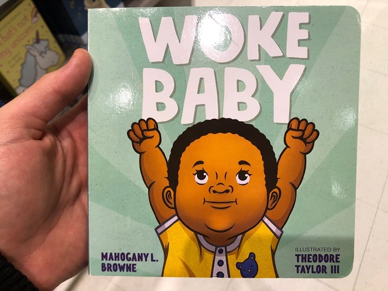
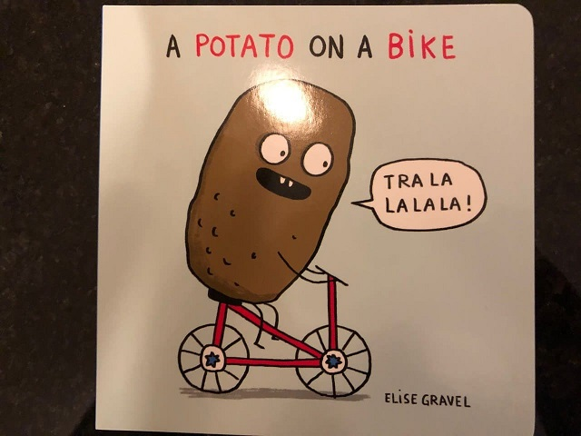

Woke Baby - My Indigo Book Shopping Experience
March 8th, 2021
My nephew is turning 1 years old soon, and it was incumbent upon me to provide him with a gift. I figured either a stuffed animal or a picture book would do the trick. Since I already got him a stuffed animal for Christmas, a picture book was the clear choice. Upon arriving at my local Indigos, or Chapters, whatever it's called these days, the sign says "Indigos" for the record, I was greeted by some fairly nice Asian lady doing the Maitre'D act. Sort of like a hostess for a high end restaurant, except it was books, and she wanted to make sure I had a mask.
I had totally forgotten that I needed a mask, because retarded COVIDtastrophism requirements sometimes get forgotten by me. Luckily, this nice Asian lady offered me a mask, which she even had the courtesy of plucking out of a box with a tong. It was very nice, even charming, despite how ridiculous the whole process was. I felt loved.
Anyway, I immediately got lost in the store, despite the kids section being the gigantic thing on the entire left side of the store. I managed to wander my way into there, and look at some of the books. Immediately something caught my eye.

I am not exaggerating when I was only 60-70% sure this was serious. Especially since the name "Mahogany Browne," seemed to hilarious to be true. I wasn't ruling out the possibility of satire. Well, perhaps I should have.
That's, certainly one "woke," baby. No doubt this baby will grow up to be demanding an end to foreign wars for Kikes. Or maybe they'll be fighting racial discrimination against Whites. Perhaps this woke baby might even fight against Billionaires, corrupt politicians, and child trannies. Truly, woke baby is a man of the people!
BTW I looked up "Mahogany L. Browne," and I just have to share this with you.
Woke Baby author and "poet" Mahogany Browne
Anyway, since I had yet to find a book that was tolerable, it didn't trouble me more to continue looking. Now not just for something for my cute little nephew, but for content. It didn't take me long at all to find yet another.
I had actually heard of "Ibram X. Kendi," before, and I had just flipped through "Woke Baby," so I was 100% sure that this was also not satire. A quick flip through "Anti-Racist Baby," confirmed my suspicions.
BTW, I googled the illustrators as well. Both "Theodore Taylor III," and "Ashley Lukashevsky." Believe it or not, when I typed in "Ashley Lukash-" I already got the auto-complete on bing. The next suggestions was "Ashley Lukashevsky jew."
 I'm like 95% sure she is on the fathers side. Anyway, her other works include illustrations for "Beyond the Gender Binary," and "Imaginary Borders."
Taken from her own website, Ashley Lukashevsky:
TDC_ARTICLE_START
I use illustration and visual art as a tool to strengthen social movements for racial justice, immigrant justice, climate justice, mental health and LGBTQIA+ liberation. I think that in order to tear down harmful systems, we need to be able to envision a world without them. I’m trying to draw what that world looks like.
TDC_ARTICLE_STOP
She's also the illustrator for the most "OMFG WTF is going on here?" jewdaism that I have ever seen.
I'm like 95% sure she is on the fathers side. Anyway, her other works include illustrations for "Beyond the Gender Binary," and "Imaginary Borders."
Taken from her own website, Ashley Lukashevsky:
TDC_ARTICLE_START
I use illustration and visual art as a tool to strengthen social movements for racial justice, immigrant justice, climate justice, mental health and LGBTQIA+ liberation. I think that in order to tear down harmful systems, we need to be able to envision a world without them. I’m trying to draw what that world looks like.
TDC_ARTICLE_STOP
She's also the illustrator for the most "OMFG WTF is going on here?" jewdaism that I have ever seen.
This is... very hebrew
Anyway, those were the funniest books that I found. However, there were a lot of books that I saw that could be sort of classified as anti-White-adjacent.
I also saw not one, but two books featuring black children talking about "muh hair." I think it's this thing amongst black wahmens to get really mad about people not liking their hair, or something. There were some other things, but after "Woke Baby," they really didn't seem worth documenting.
After a while, I finally found my book. A cute book, for a cute baby goy.

I'm like 95% sure she is on the fathers side. Anyway, her other works include illustrations for "Beyond the Gender Binary," and "Imaginary Borders."
Taken from her own website, Ashley Lukashevsky:
TDC_ARTICLE_START
I use illustration and visual art as a tool to strengthen social movements for racial justice, immigrant justice, climate justice, mental health and LGBTQIA+ liberation. I think that in order to tear down harmful systems, we need to be able to envision a world without them. I’m trying to draw what that world looks like.
TDC_ARTICLE_STOP
She's also the illustrator for the most "OMFG WTF is going on here?" jewdaism that I have ever seen.